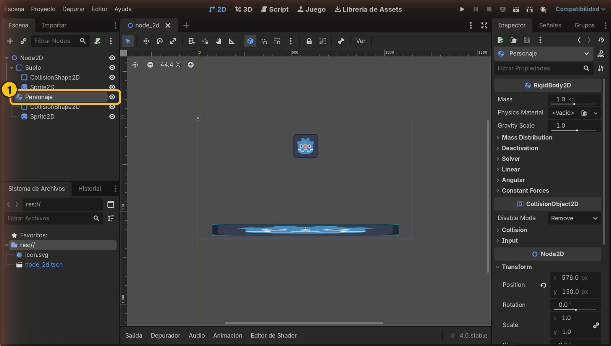
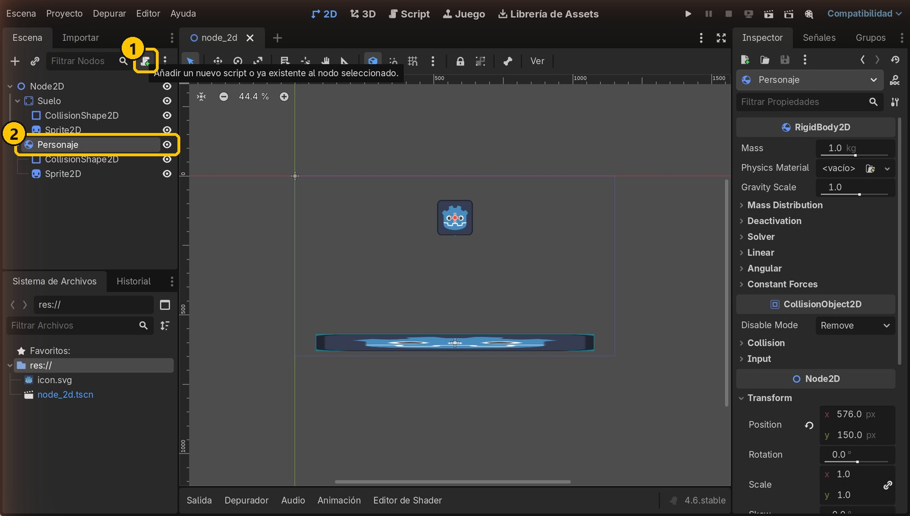
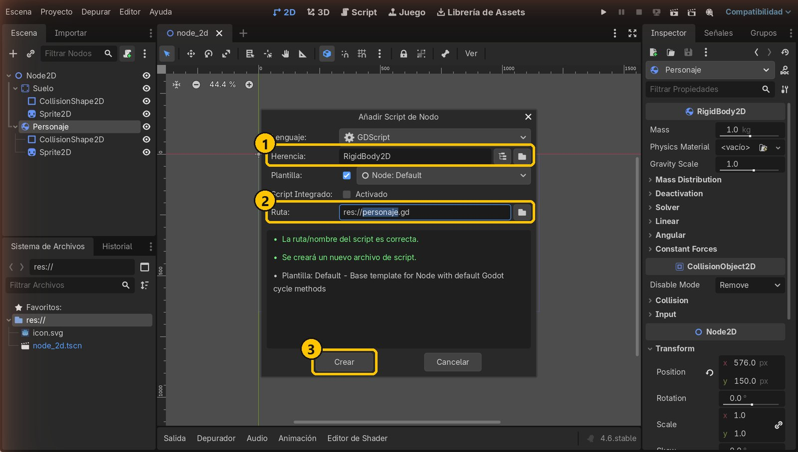
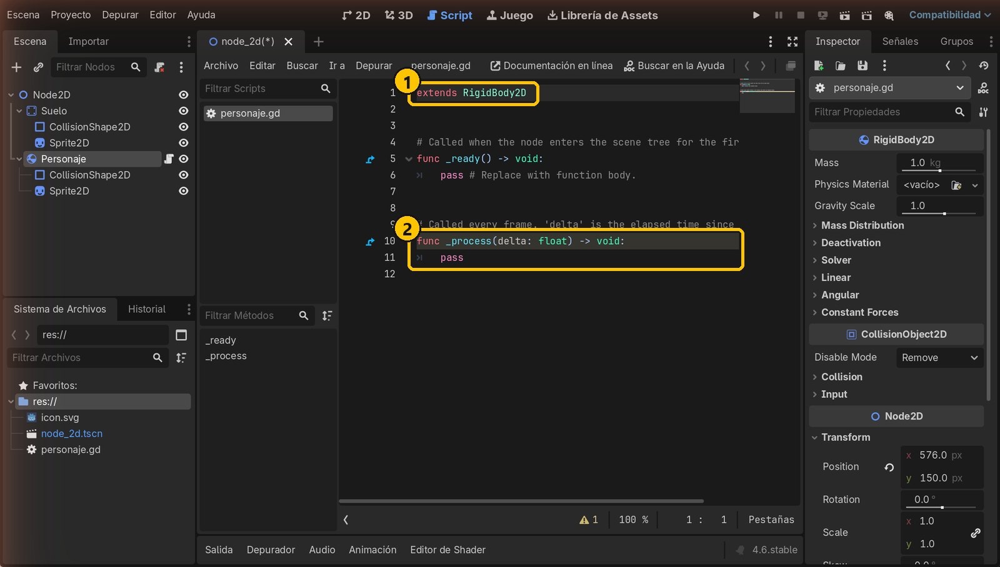
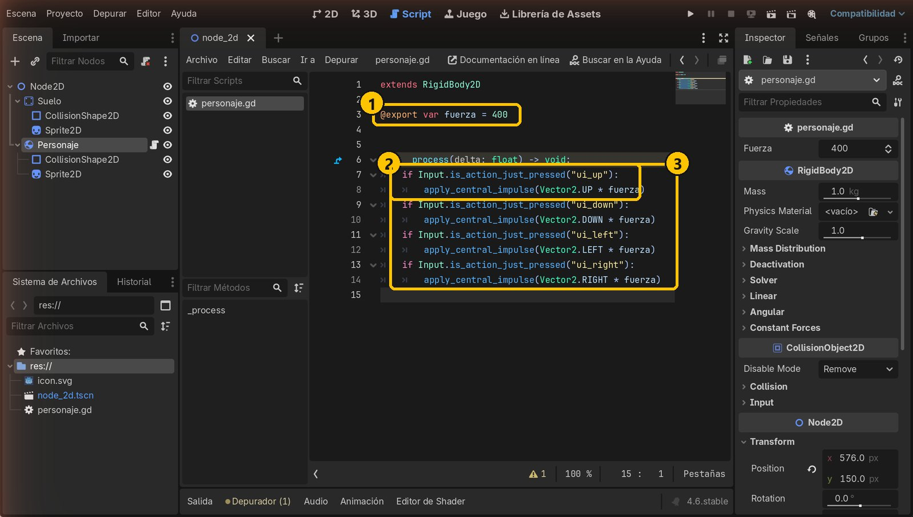
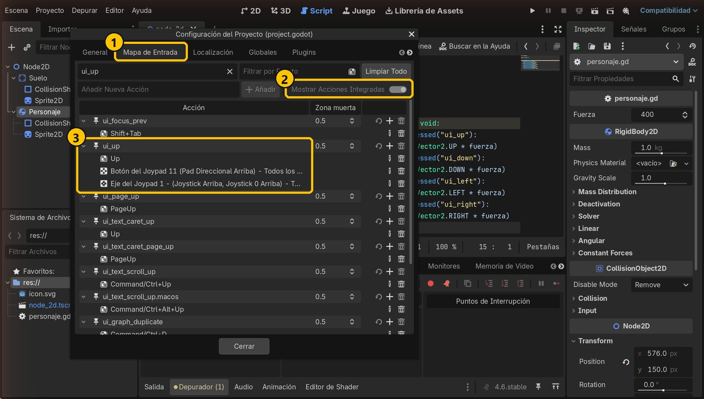
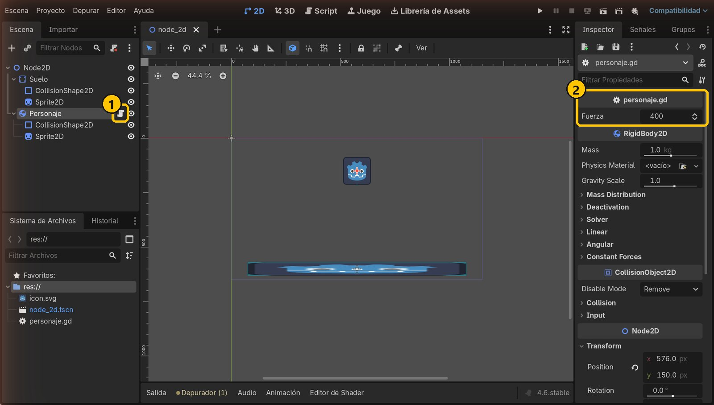
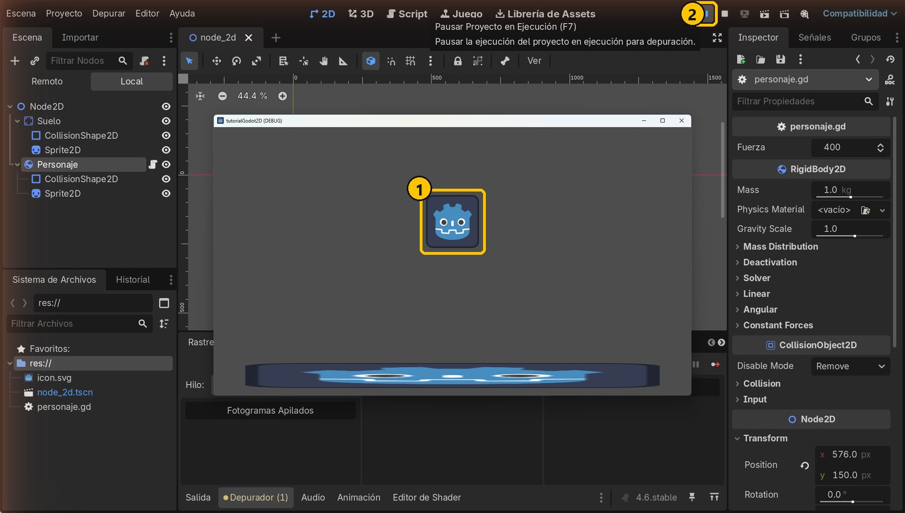
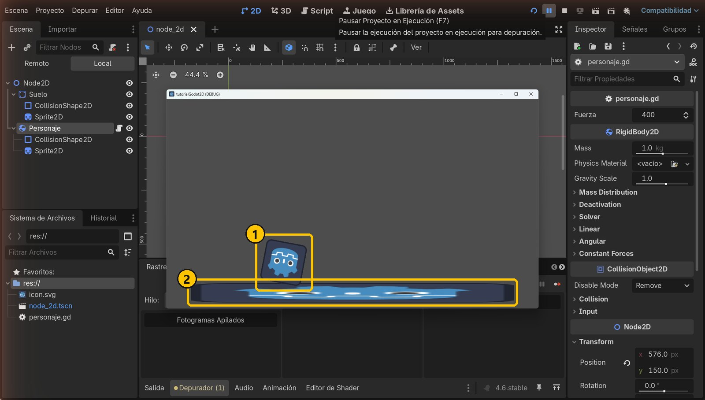

Objetivo
Al terminar, el personaje (RigidBody2D) se moverá con las flechas del teclado: salta con ↑ y rueda con ← y →, siempre respetando la física.
Partimos de: El proyecto del tutorial 1: un Suelo (StaticBody2D) y un Personaje (RigidBody2D) que cae sobre él.
Nodos que usamos
ImpulsoUn empujón instantáneo. A un RigidBody2D no se le cambia la posición: se le empuja y la física decide cómo se mueve.
apply_central_impulse()Aplica un impulso en el centro del cuerpo. Recibe un Vector2: dirección × fuerza.
_process(delta)Función que Godot ejecuta en cada fotograma (unas 60 veces por segundo). Ahí miramos el teclado.
Input + ui_*Input.is_action_just_pressed("ui_up") es verdadero solo en el fotograma en que se acaba de pulsar la acción.
Paso a paso
1Selecciona el Personaje
Abre la escena del tutorial anterior y selecciona el nodo Personaje en el panel Escena.

- 1Personaje (RigidBody2D)
2Pulsa «Añadir script»
Con Personaje seleccionado, pulsa el botón del pergamino con el signo + que hay arriba del panel Escena.

- 1Añadir un nuevo script
- 2Nodo seleccionado
3Crea el script
Deja el lenguaje GDScript. Comprueba que Herencia es RigidBody2D y que la ruta es res://personaje.gd. Pulsa Crear.

- 1Hereda de RigidBody2D
- 2Archivo personaje.gd
- 3Crear
4Mira la plantilla
Godot abre el editor de scripts con una plantilla. extends RigidBody2D indica qué tipo de nodo controla el script. La función _process(delta) se ejecuta en cada fotograma: ahí comprobaremos el teclado.

- 1El script controla un RigidBody2D
- 2Se ejecuta en cada fotograma
5Escribe el código de los impulsos
Sustituye la plantilla por este código y guarda con Ctrl+S. @export hace que la variable fuerza aparezca en el Inspector. Cada if mira si se acaba de pulsar una flecha y empuja al personaje en esa dirección: Vector2.UP * fuerza es un vector hacia arriba de 400 de largo.
extends RigidBody2D
@export var fuerza = 400
func _process(delta: float) -> void:
if Input.is_action_just_pressed("ui_up"):
apply_central_impulse(Vector2.UP * fuerza)
if Input.is_action_just_pressed("ui_down"):
apply_central_impulse(Vector2.DOWN * fuerza)
if Input.is_action_just_pressed("ui_left"):
apply_central_impulse(Vector2.LEFT * fuerza)
if Input.is_action_just_pressed("ui_right"):
apply_central_impulse(Vector2.RIGHT * fuerza)
- 1Variable fuerza, visible en el Inspector
- 2Si se pulsa ↑, impulso hacia arriba
- 3Las cuatro direcciones
6¿De dónde salen ui_up y compañía?
Son acciones que Godot trae de serie. Las ves en Proyecto → Configuración del Proyecto → Mapa de Entrada, activando Mostrar Acciones Integradas. ui_up es la flecha arriba (y la cruceta o el joystick de un mando).

- 1Mapa de Entrada
- 2Mostrar Acciones Integradas
- 3ui_up: tecla ↑ y mando
7Ajusta la fuerza en el Inspector
Vuelve a la vista 2D. Personaje tiene ahora el icono de script y en el Inspector aparece Fuerza. Puedes cambiar su valor ahí sin tocar el código.

- 1Personaje tiene script
- 2Fuerza: 400
8Ejecuta y salta
Ejecuta con F5 y pulsa ↑: el personaje recibe un impulso hacia arriba y salta. (En la captura el juego está en pausa con F7 para verlo en el aire).

- 1En el aire tras el impulso
- 2Pausa (F7)
9Rueda a los lados
Pulsa ← o →: el personaje sale rodando. Es un cuerpo redondo y el roce con el suelo lo hace girar: eso lo calcula la física, no nuestro código.

- 1Rueda y gira
- 2El roce con el suelo lo hace girar
Resumen
- A un RigidBody2D no se le cambia la posición: se le dan impulsos con
apply_central_impulse(). - Las teclas se leen con
Inputy las acciones del Mapa de Entrada (ui_up,ui_left…). - Con
@exportajustas la fuerza desde el Inspector.
Si algo falla
- No pasa nada al pulsar las flechas. Comprueba que el script está en Personaje (icono de pergamino) y que lo has guardado. Haz clic en la ventana del juego para que tenga el foco.
- Error «Invalid call... apply_central_impulse». El script no hereda de
RigidBody2Do está puesto en otro nodo. La primera línea debe serextends RigidBody2D. - Sale disparado fuera de la pantalla. La fuerza es muy grande. Bájala en el Inspector (prueba 200 o 300).
- Aparece un aviso amarillo sobre «delta». Solo avisa de que no usamos ese parámetro. No es un error; si quieres quitarlo, llámalo
_delta.
Prueba tú
- Cambia Fuerza en el Inspector a
200y luego a800. ¿Cuál se controla mejor? - Haz que el salto sea más fuerte que el movimiento lateral: usa
fuerza * 2solo enui_up. - Prueba
is_action_presseden vez deis_action_just_presseden las flechas laterales. ¿Qué cambia?